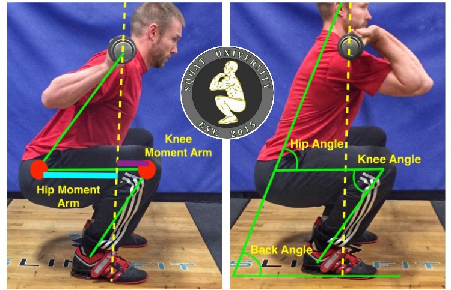
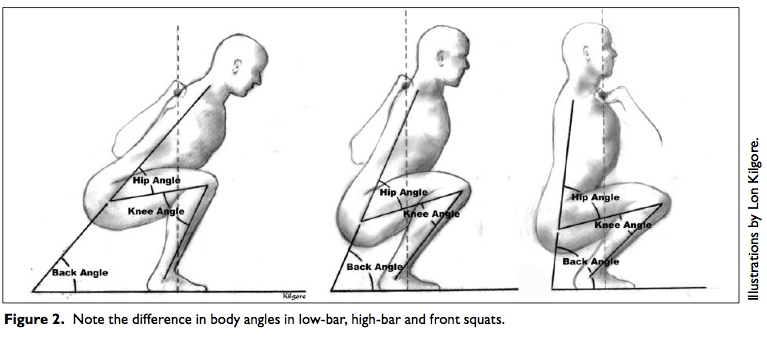

Pipeline Biomecánico Determinista
vs. Clasificadores Deep Learning
María Gabriela Bohórquez
Especialización en Inteligencia Artificial · CEIA
Facultad de Ingeniería, Universidad de Buenos Aires
Objetivo
Automatizar el análisis biomecánico en tiempo real — Sentadilla · Flexión · Peso Muerto

Pipeline completo corriendo en tiempo real · <50ms por frame · Edge computing
| Aspecto | Solo Deep Learning | Nuestro Híbrido |
|---|---|---|
| Interpretabilidad | ✗ Caja negra | ✓ Reglas explícitas |
| Robustez al fondo | ⚠ Memoriza el gym | ✓ Agnóstico |
| Latencia | ⚠ Modelos pesados | ✓ <50ms real-time |
| Tipo de error | ⚠ Impredecible | ✓ Determinista |
| Incertidumbre | ✗ Binario forzado | ✓ 4 estados lógicos |
| Datos de forma | ✗ Requiere miles de videos etiquetados "buena/mala forma" | ✓ Reglas biomecánicas = zero labels de forma necesarios |
| Modelo | Parámetros | Top-1 (mejor) | Top-1 (final) | Épocas |
|---|---|---|---|---|
| YOLOv8n-cls | 2.7 M | 99.4% | 99.4% | 50 |
| YOLOv8s-cls | 6.9 M | 100% | 99.4% | 15 |
| YOLO11n-cls | 2.6 M | 100% | 99.4% | 15 |
Entrenados en RTX 3070 Laptop · Los 3 modelos completaron exitosamente
Conclusión
La clasificación está resuelta con <3M params. El desafío real es el análisis biomecánico.
⚠ Bug crítico del dataset
Carpetas vacías en Roboflow → PyTorch ImageFolder desplaza el ground truth → 0% Top-1 con loss normal. Fix: reestructuración del árbol. Resultado: 99.4%.

Hip · Knee · Back angle varían según variante — Lon Kilgore
🏋️ Sentadilla
Rodilla < 90° · Torso ∈ [45°, 100°]
💪 Flexión
Codo < 110° · Alineación hombro-cadera-rodilla > 150°
🔩 Peso Muerto
Espalda-Cadera-Rodilla > 155° · Sin flexión lumbar
Lógica de 4 estados + coaching
✓ OK — Técnica correcta, rep válida
~ MEJORAR — Forma aceptable, mensaje específico
✗ MAL — Corrección necesaria (e.g., "Espalda redondeada!")
? SIN_DATO — Visibilidad baja (umbral 0.3–0.4)
Contador de Repeticiones
→ Máquina de estados up/down por ángulo crítico
→ Media móvil de 5 frames para suavizar el ángulo
→ Histeresis: umbral de bajada ≠ umbral de subida
→ Votación mayoritaria de 10 frames en estado de forma
→ Detección de dirección: suprime "baja más" al subir
| Video | Frames | % Forma OK | Clasificación YOLO |
|---|---|---|---|
| Sentadilla (máquina Smith) | 297 | 67.3% | 100% correcto |
| Sentadilla (peso libre) | 1,039 | 3.7% | 100% correcto |
| Flexiones | 283 | 35.7% | 100% correcto |
| Peso Muerto convencional #1 | 1,630 | 11.7% | 100% correcto |
| Peso Muerto convencional #2 | 1,719 | 15.5% | 100% correcto |
Nota: Los % bajos de OK en peso muerto y flexión reflejan técnica real deficiente detectada correctamente — no falsos positivos. El sistema funciona.
Heurísticas + IA superan IA pura en dominios especializados con datos limitados o desbalanceados.
4 estados lógicos (OK / MEJORAR / MAL / SIN_DATO) con coaching específico — más útil que clasificación binaria y más honesto cuando la visibilidad es baja.
Edge computing viable: YOLOv8n (2.7M params) + MediaPipe → mobile-ready, <50ms por frame.
Integridad del split es más crítica que arquitectura: 0% → 99.4% Top-1 con un solo fix estructural.
Tracking angular es escalable: el modelo de picos en señal de ángulo funciona para cualquier ejercicio articular.
■ OK · ■ MEJORAR · ■ MAL · ■ SIN_DATO · Coaching + contador de reps en tiempo real
Limitaciones actuales
✗ Solo 3 ejercicios implementados
✗ Requiere vista lateral clara
✗ Una persona por frame
✗ Split frame-level → posible leakage temporal entre train y test
Próximos pasos
→ Ampliar a 10+ ejercicios
→ Multi-persona con ByteTrack
→ App móvil + integración wearables
Repositorio
github.com/magabohorquez/gym_form_checker
Visión por Computadora II · CEIA · Universidad de Buenos Aires